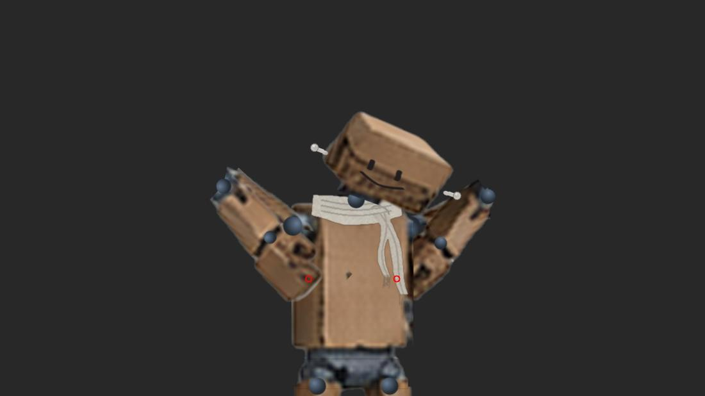
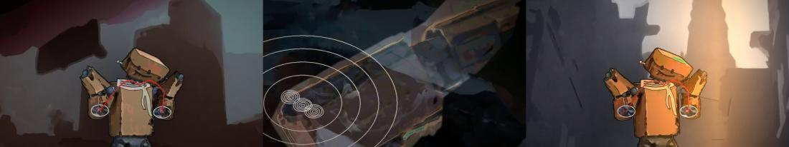
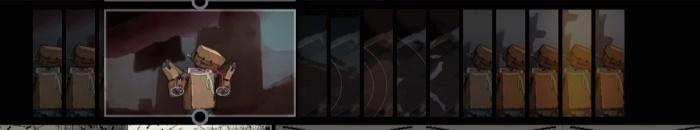
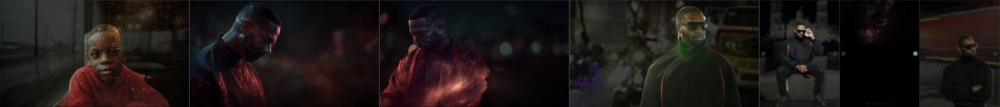
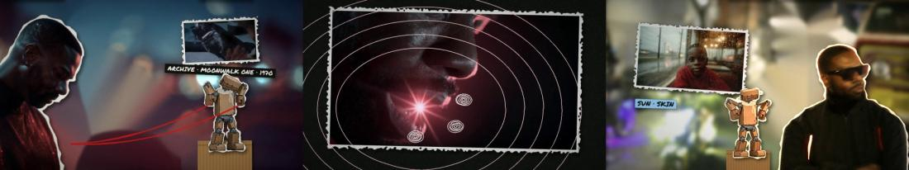
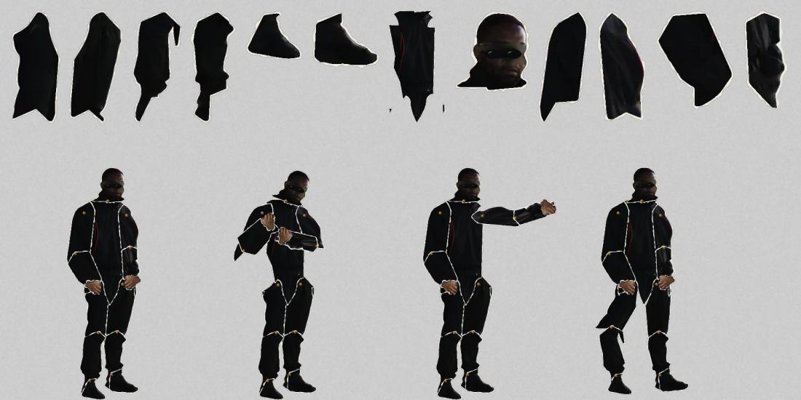
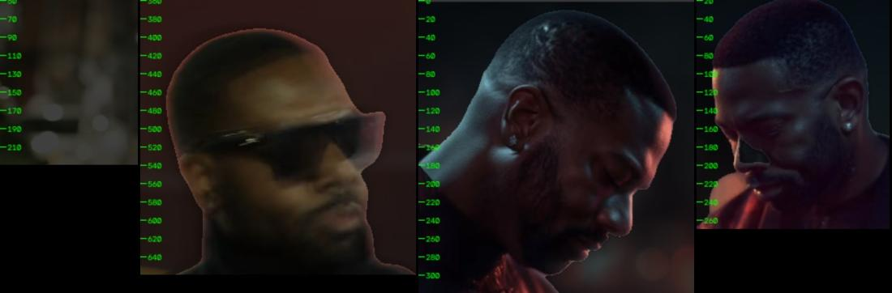
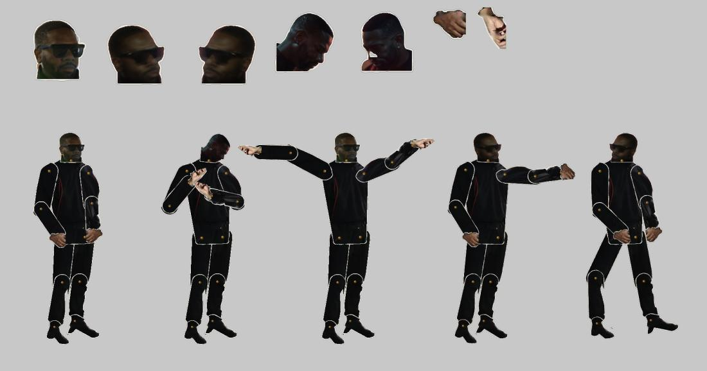

TSU-10 · case 11 of 11 · This Side Up
Boone visits WYGWYL
Can Boone be dropped into another lab's cel database and clock?
Patch P05-008, 8.8 s at 491.442 to 500.202 s of the suite, in two versions, and the poet made into a paper puppet in Boone's rig format.
How it was made
- Read the patch, its words and its found clip from the lab's own files.
- Key Boone to the word times.
- Play each shot in front of the Cels and Spine-Cut cuts at the same suite second.
- A paper-collage version from the poet's stills.
- The poet as a paper puppet.
What this case teaches
- Working to someone else's clock is a constraint you can check: every beat lands on a word time.
How it differs. Every earlier case built its own world. This one enters an existing one.
Versions, in order
Every cut that was rendered, oldest first, with what changed from the one before. Videos are 640 px web encodes.
-
01
Boone in the cel layer
Oct 19 18:19 · 0:09Over the lab's cel cuts at the same suite moment.
-
02
Paper collage
Oct 19 23:20 · 0:09The poet cut from his stills, Boone on his box, the archive pinned up.
-
03
The poet as a puppet, first test
Oct 19 23:27 · 0:05The poet rig beside Boone. He appears; he does not speak.
The sheets, step by step
Grouped by stage of the work, with the time each file was written. Click any sheet to see it full size; the arrow keys move through them.












Show 2 more from this step




Read the record
Carried forward
The poet puppet goes on to Bloodline under WYGWYL.